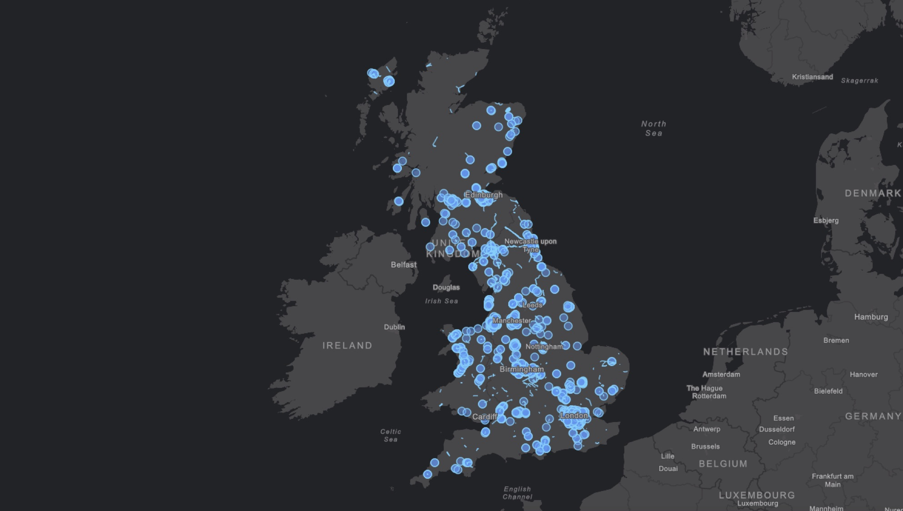

The future of transport? Shared services built on data
Mobility as a Service has the power to change the way we travel. Ito World CEO Johan Herrlin shares what’s driving the movement forward, from smartphones to autonomous vehicles, and the critical role that data – especially open data – can play
By Johan Herrlin
Mobility as a Service (MaaS) describes the idea that we’re moving away from privately owned modes of transportation and towards consuming transportation solutions as a service.
This will be enabled by blending both public and private transportation providers across multiple modes of transportation, and providing a single-access interface for managing trips.
MaaS has the potential to transform our society by changing the way people and goods move from place to place over the next few decades through multimodal, multisector transportation options. More open data being used will be key to making this happen.
Transport apps offer users a comprehensive view of transportation options and the ability to manage the entire lifecycle of a trip, from journey planning to ticketing. MaaS providers sell access to these for individual journeys or as a monthly subscription for a particular geography, typically making money on the margin they earn – in buying tickets wholesale and selling retail, for example.
What has enabled MaaS?
The short answer is smartphones and the sharing economy.
Smartphones enable users to get information when they need it, request services and see options mapped out. Most importantly, smart phones are location-aware. The sharing economy, represented by companies such as Uber, Airbnb or bike-sharing schemes, have changed the expectation for how goods and services are consumed – from ownership to consumption. There are, of course, many other factors that have enabled MaaS.
Globally, we are seeing more people moving towards cities and dense urban areas necessitating and enabling new forms of transportation. Millennials are generally far less concerned about the prestige value of car ownership and more interested in simply having access to cars. They are increasingly gravitating towards areas where car ownership is less of a necessity, thanks to new modes of transportation like ride-sharing services.
The development of autonomous vehicles will have a huge impact on MaaS as it allows consumers to more seamlessly use cars in conjunction with other forms of transportation.
Today, a commuter is unlikely to want to switch from a car to a train on their journey, even if it means getting to work sooner. The reason for this is that they would have to leave the car at the station (and pay for parking), and then have to come back to that same station in the evening to pick up the car. It may not make sense for the commuter to take the same route home as they did on their way into work. With autonomous vehicles, this problem goes away.
Electric vehicles allow for greater efficiency and cleaner solutions. These, along with autonomous vehicles, will likely deliver a myriad of new transportation solutions from single-use vehicles to busses and everything in between.
The last trend is, of course, open systems and data. The ability to exchange data between all of these systems will be key in finding the optimal route (based on an individual’s preferences), understand the fare structures and provide tickets that work across different systems.
Data needs
Many data elements need to come together for MaaS to become a reality.
One of the key challenges remaining is getting public transportation data to be as complete and accurate as needed to support MaaS solutions. This is where open data comes in. Public transportation data has three classic challenges that opening it up can help to address.
By opening transportation data – such as schedules, real-time and fares – we also see the classic benefits brought about by open data more generally.
Openly available transport data has been the basis of many of the most popular journey planning apps – such as Google Maps and Apple Maps – as well as many local apps that serve individual communities.
How can open data best be leveraged for MaaS?
At Ito World – a global data aggregator for transit and other MaaS-related data – we believe that in order for MaaS to become a reality, we must deliver MaaS providers transit data that reflects the real-life customer experience as closely as possible.
Imagine being dropped off at a train station by a ridesharing service. If the train is significantly delayed or cancelled, the promise of MaaS falls apart quickly. In order to have a seamless experience using multimodal, multisector transportation solutions, all the data must be as accurate and timely as possible.
At Ito World, we work with many agencies and operators, leveraging both open and proprietary data to improve, augment and align their real-time data to timetables, delivering a single, integrated real-time feed for entire cities across the world. These data feeds are used to power some of the largest journey planners in the world, as well as emerging MaaS providers.
We’re often asked why there’s a need for a company like ours when much of the data is open anyway. Look at Great Britain as an example. On the current dataset for just the buses in Great Britain, we have made corrections, edits and enhancements that affect 60,000 journeys. In other words, if a MaaS provider were to have leveraged the raw open data, they would have had 60,000 opportunities to create a bad user experience.

MaaS has the potential to improve lives around the world. By using data made open by transport agencies and operators, more companies like Ito World can help to provide comprehensive, complete and accurate transit data across the world to power MaaS solutions.
Johan Herrlin is CEO at Ito World, a global data aggregator for transit and other MaaS-related data. Ito World is also an ODI Member. Follow @ItoWorld on Twitter